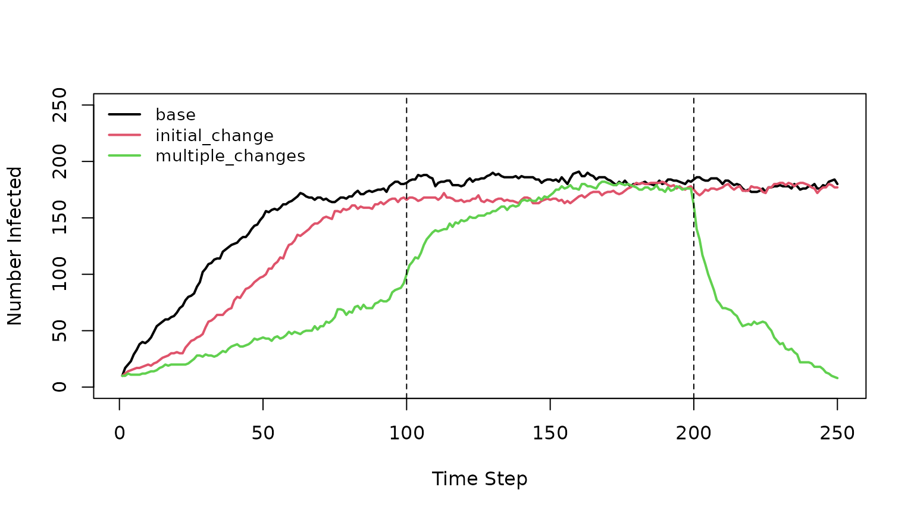
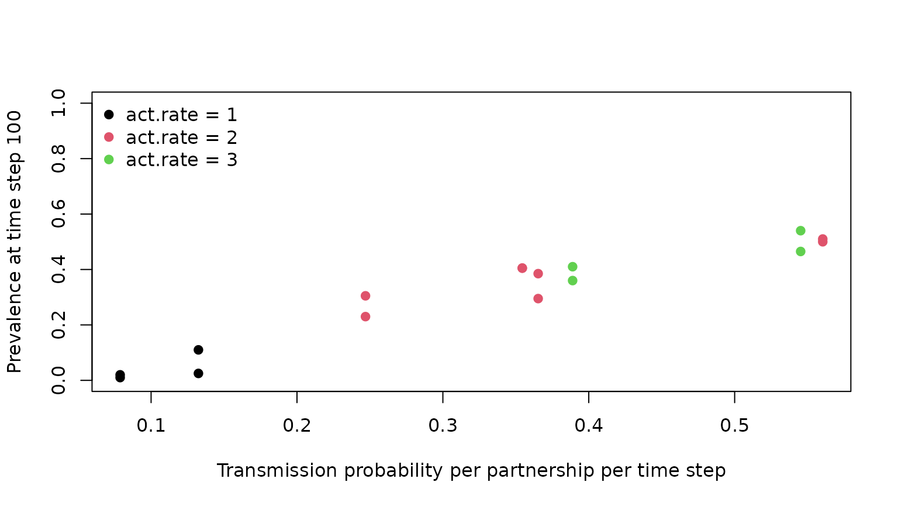
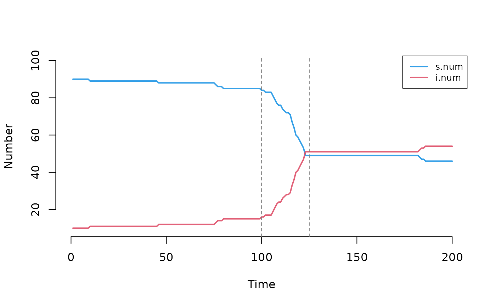

Working with Model Parameters in EpiModel
EpiModel v2.7.0
2026-10-10
Source:vignettes/model-parameters.Rmd
model-parameters.RmdIntroduction
This vignette assumes familiarity with setting up and running network models in EpiModel. See the Network Modeling for Epidemics (NME) course materials and the EpiModel Gallery for background.
For working with nodal attributes and epidemic summary statistics, see the companion vignette Working with Custom Attributes and Summary Statistics in EpiModel. For network objects and edgelists, see Working with Network Objects in EpiModel.
In a model, parameters are the input variables that define aspects of system behavior. In a basic SIS (Susceptible-Infected-Susceptible) model, these might include an infection probability, an act rate, and a recovery rate. In simple models, each parameter is a single fixed value that remains constant throughout a simulation. Real-world applications, however, often require more flexibility: parameters that change over time (e.g., to represent an intervention rollout or behavioral change during an epidemic), parameters drawn from distributions (for sensitivity analysis or calibration), or large parameter sets managed via spreadsheets.
This vignette demonstrates how to implement:
- Scenarios: Named sets of parameter changes applied at the start of a simulation or at specific time steps—the primary mechanism for time-varying parameters, counterfactual analysis, and intervention modeling.
-
Parameter input via tables: Passing many parameters
at once through a
data.frame, enabling spreadsheet-based parameter management. - Parameter uncertainty: Drawing parameter values from distributions or from joint parameter sets and running each draw as a scenario, for uncertainty and sensitivity analysis.
- Parameter and control updaters (advanced): The low-level mechanism underlying scenarios, exposed directly for cases where the scenario API is not flexible enough.
Scenarios
Scenarios allow you to define named sets of parameter values that can change at specific time steps during a simulation. This is the recommended approach for implementing time-varying parameters—for example, modeling an intervention that reduces transmission probability partway through an epidemic, or comparing multiple policy alternatives.
Our research paper implementing time-varying parameter scenarios for COVID-19 sexual distancing interventions was published in the Journal of Infectious Diseases. The code can be found here.
Setup
First, we set up a simple SIS model as the base case.
set.seed(10)
nw <- network_initialize(n = 200)
est <- netest(nw,
formation = ~edges, target.stats = 60,
coef.diss = dissolution_coefs(~offset(edges), 10, 0), # duration = 10, closed population
verbose = FALSE
)
#> Starting simulated annealing (SAN)
#> Iteration 1 of at most 4
#> Finished simulated annealing
#> Starting maximum pseudolikelihood estimation (MPLE):
#> Obtaining the responsible dyads.
#> Evaluating the predictor and response matrix.
#> Maximizing the pseudolikelihood.
#> Finished MPLE.
param <- param.net(inf.prob = 0.9, rec.rate = 0.01, act.rate = 2)
init <- init.net(i.num = 10)
control <- control.net(type = "SIS", nsims = 1, nsteps = 250, verbose = FALSE)Scenario Definitions
Scenarios are defined using create_scenario_list, which
takes a specially formatted data.frame as input and outputs
a list of scenarios usable by EpiModel. We use
tibble::tribble here for readability, but any
data.frame constructor works.
library(dplyr)
#>
#> Attaching package: 'dplyr'
#> The following objects are masked from 'package:stats':
#>
#> filter, lag
#> The following objects are masked from 'package:base':
#>
#> intersect, setdiff, setequal, union
scenarios.df <- tribble(
~.scenario.id, ~.at, ~inf.prob, ~rec.rate,
"base", 0, 0.9, 0.01,
"initial_change", 0, 0.2, 0.01,
"multiple_changes", 0, 0.1, 0.04,
"multiple_changes", 100, 0.9, 0.01,
"multiple_changes", 200, 0.1, 0.1
)
knitr::kable(scenarios.df)| .scenario.id | .at | inf.prob | rec.rate |
|---|---|---|---|
| base | 0 | 0.9 | 0.01 |
| initial_change | 0 | 0.2 | 0.01 |
| multiple_changes | 0 | 0.1 | 0.04 |
| multiple_changes | 100 | 0.9 | 0.01 |
| multiple_changes | 200 | 0.1 | 0.10 |
The data.frame requires two columns:
-
.scenario.id: an identifier for the scenario. -
.at: the time step at which the parameter changes should apply. Use0for changes that take effect before the simulation begins.
Remaining columns are parameter names. They must start with a letter
and contain only letters, numbers, or . (underscores are
reserved for vector indexing, described below). If a cell is
NA, EpiModel sets that parameter to NA—it does
not mean “leave unchanged.”
In this example, the "multiple_changes" scenario has
three rows sharing the same .scenario.id, representing a
single scenario with parameter changes at three different time
points.
To convert from the data.frame to a usable list of
scenarios:
scenarios.list <- create_scenario_list(scenarios.df)
str(scenarios.list, max.level = 2)
#> List of 3
#> $ base :List of 2
#> ..$ id : chr "base"
#> ..$ .param.updater.list:List of 1
#> $ initial_change :List of 2
#> ..$ id : chr "initial_change"
#> ..$ .param.updater.list:List of 1
#> $ multiple_changes:List of 2
#> ..$ id : chr "multiple_changes"
#> ..$ .param.updater.list:List of 3Running Scenarios
We loop over all scenarios, using use_scenario to create
a modified parameter object for each. Under the hood,
use_scenario generates parameter updaters (described in the
Advanced section below) that apply the specified changes at the
designated time steps.
# List to hold simulation results
d_list <- vector(mode = "list", length = length(scenarios.list))
names(d_list) <- names(scenarios.list)
for (scenario in scenarios.list) {
print(scenario$id)
sc.param <- use_scenario(param, scenario)
sim <- netsim(est, sc.param, init, control)
d_sim <- as.data.frame(sim)
d_sim[["scenario"]] <- scenario$id
d_list[[scenario$id]] <- d_sim
}
#> [1] "base"
#> [1] "initial_change"
#> [1] "multiple_changes"
#>
#> A MESSAGE occured in module 'epimodel.internal' at step 100
#>
#>
#> At timestep = 100 the following parameters were modified:
#> 'inf.prob', 'rec.rate'
#>
#> A MESSAGE occured in module 'epimodel.internal' at step 200
#>
#>
#> At timestep = 200 the following parameters were modified:
#> 'inf.prob', 'rec.rate'For the "multiple_changes" scenario, messages appear at
time steps 100 and 200 indicating that parameters were modified during
the simulation. The other scenarios are silent because their changes
occur before the simulation begins (.at = 0).
Now we can plot the results. We use base R plotting here rather than
plot.netsim() because we need to overlay results from
separate netsim runs on a single axis.
plot(d_list$base$time, d_list$base$i.num,
type = "l", col = 1, lwd = 2, ylim = c(0, 250),
xlab = "Time Step", ylab = "Number Infected")
lines(d_list$initial_change$time, d_list$initial_change$i.num,
type = "l", col = 2, lwd = 2)
lines(d_list$multiple_changes$time, d_list$multiple_changes$i.num,
type = "l", col = 3, lwd = 2)
abline(v = c(100, 200), lty = 2)
legend("topleft", legend = names(d_list),
col = 1:3, lwd = 2, cex = 0.9, bty = "n")
The "initial_change" scenario shows a slower epidemic
than the base case because the infection probability is reduced from 0.9
to 0.2 from the start.
The "multiple_changes" scenario demonstrates three
phases:
- Steps 1–99: Slow growth (low infection probability, higher recovery rate).
- Steps 100–199: Base-case parameters applied, so the epidemic trajectory accelerates.
- Steps 200–250: Infection probability drops and recovery rate increases, driving rapid epidemic decline.
Scenarios with Parameter Vectors
In full-scale modeling projects, parameters are often vectors. For
example, hiv.test.rate might be a vector of length 3
containing weekly HIV screening probabilities for Black, Hispanic, and
White persons.
To use vectors in scenarios, create a separate column for each
element using the naming convention paramname_N, where
N is the position in the vector:
scenarios.df <- tribble(
~.scenario.id, ~.at, ~hiv.test.rate_1, ~hiv.test.rate_2, ~hiv.test.rate_3,
"base", 0, 0.001, 0.001, 0.001,
"initial_change", 0, 0.002, 0.001, 0.002,
"multiple_changes", 0, 0.002, 0.001, 0.002,
"multiple_changes", 100, 0.004, 0.001, 0.004,
"multiple_changes", 200, 0.008, 0.001, 0.008
)
knitr::kable(scenarios.df)| .scenario.id | .at | hiv.test.rate_1 | hiv.test.rate_2 | hiv.test.rate_3 |
|---|---|---|---|---|
| base | 0 | 0.001 | 0.001 | 0.001 |
| initial_change | 0 | 0.002 | 0.001 | 0.002 |
| multiple_changes | 0 | 0.002 | 0.001 | 0.002 |
| multiple_changes | 100 | 0.004 | 0.001 | 0.004 |
| multiple_changes | 200 | 0.008 | 0.001 | 0.008 |
All elements of a vector parameter must be specified in the
data.frame, even if some values do not change across
scenarios (e.g., hiv.test.rate_2 is constant here but must
still be included).
When working with many parameters, we recommend storing the
scenarios.df as a CSV, RDS or Excel file for easier sharing
and editing.
Parameter Input via Table
The param.net function accepts a data.frame
of parameters through the data.frame.params argument. This
allows passing many parameters at once or working with a spreadsheet to
track and update parameters before use in EpiModel.
The data.frame requires three columns:
-
param: The parameter name. For vector parameters (length > 1), append the position with an underscore (e.g.,"p_1","p_2"). -
value: The parameter value (as a character string). -
type: The type of the parameter value. Only three values are accepted:"numeric","logical", or"character".
Additional columns (e.g., details, source)
may be included for documentation but are ignored by EpiModel.
df_params <- tribble(
~param, ~value, ~type,
"hiv.test.rate_1", "0.003", "numeric",
"hiv.test.rate_2", "0.102", "numeric",
"hiv.test.rate_3", "0.492", "numeric",
"prep.require.lnt", "TRUE", "logical",
"group_1", "first", "character",
"group_2", "second", "character"
)
knitr::kable(df_params)| param | value | type |
|---|---|---|
| hiv.test.rate_1 | 0.003 | numeric |
| hiv.test.rate_2 | 0.102 | numeric |
| hiv.test.rate_3 | 0.492 | numeric |
| prep.require.lnt | TRUE | logical |
| group_1 | first | character |
| group_2 | second | character |
Pass the table via data.frame.params. These parameters
can be combined with named parameters for maximum flexibility. In case
of conflict, named parameters take priority over those in the
data.frame:
Parameter Uncertainty
Fixed parameters assume that each input value is known with
certainty. In practice, many inputs are estimated with error, and an
analysis may need to show how that uncertainty propagates to the
epidemic outcomes. In EpiModel this is done with scenarios: the
parameter values are drawn before any simulation runs and stored in a
data.frame with one row per draw, and each row is run as a
scenario that replaces the base parameter values at
.at = 0. Because the draws exist as a table before the
simulations start, they can be inspected and saved, they can be joined
back onto the simulation output, and parameters that were sampled
together stay together.
Drawing Parameter Values
We draw eight sets of values for the act rate and the per-act
infection probability of an SIS model that uses the network model and
initial conditions from Setup. Each parameter is drawn
independently with base R sampling functions: sample()
selects from a discrete set of values (optionally weighted through its
prob argument), and rbeta() draws from a
continuous distribution.
set.seed(12)
n.draws <- 8
draws <- data.frame(
.scenario.id = paste0("draw", seq_len(n.draws)),
.at = 0,
act.rate = sample(c(1, 2, 3), n.draws, replace = TRUE),
inf.prob = rbeta(n.draws, 2, 6)
)
knitr::kable(draws, digits = 3)| .scenario.id | .at | act.rate | inf.prob |
|---|---|---|---|
| draw1 | 0 | 2 | 0.203 |
| draw2 | 0 | 2 | 0.197 |
| draw3 | 0 | 3 | 0.151 |
| draw4 | 0 | 3 | 0.231 |
| draw5 | 0 | 2 | 0.337 |
| draw6 | 0 | 1 | 0.132 |
| draw7 | 0 | 1 | 0.079 |
| draw8 | 0 | 2 | 0.132 |
The .scenario.id and .at columns follow the
scenario format described in Scenario Definitions. Each draw is
its own scenario, and the remaining columns hold the drawn values.
Correlated Draws
Drawing each parameter separately assumes that the parameters are independent. When they are not, as with accepted parameter sets from a calibration or samples from a joint posterior distribution, each set must be drawn as a whole row. Sampling each column separately from such a table would discard the correlation between parameters.
As an example, suppose that a calibration produced 500 accepted parameter sets in which the act rate and the infection probability are negatively correlated, as happens when the calibration targets inform their combined effect on transmission but not each parameter separately.
posterior <- data.frame(act.rate = runif(500, 1, 3))
posterior$inf.prob <- 0.5 / posterior$act.rate * exp(rnorm(500, 0, 0.1))
cor(posterior$act.rate, posterior$inf.prob)
#> [1] -0.9203932To keep each set together, we sample rows of the table rather than values from each column:
draws.joint <- data.frame(
.scenario.id = paste0("draw", seq_len(n.draws)),
.at = 0,
posterior[sample(nrow(posterior), n.draws), ],
row.names = NULL
)
knitr::kable(draws.joint, digits = 3)| .scenario.id | .at | act.rate | inf.prob |
|---|---|---|---|
| draw1 | 0 | 2.032 | 0.206 |
| draw2 | 0 | 1.442 | 0.331 |
| draw3 | 0 | 1.360 | 0.341 |
| draw4 | 0 | 1.758 | 0.274 |
| draw5 | 0 | 2.748 | 0.185 |
| draw6 | 0 | 2.323 | 0.211 |
| draw7 | 0 | 2.309 | 0.211 |
| draw8 | 0 | 2.768 | 0.163 |
This table is run in the same way as the independent draws in
Running the Draws. When it is feasible to simulate every
accepted parameter set, the full table can be used without sampling,
after adding the .scenario.id and .at
columns.
Vector Parameters
Vector parameters use the paramname_N columns described
in Scenarios with Parameter Vectors, with one column per
element. Each element can be drawn from its own distribution, or the
elements can be drawn jointly as rows. In this example,
test.rate is a testing rate stratified into two groups, of
the kind a custom testing module would use. As with any scenario, the
parameter must already be defined in the base parameter object.
draws.vec <- data.frame(
.scenario.id = paste0("draw", 1:3),
.at = 0,
test.rate_1 = rnorm(3, 0.05, 0.01),
test.rate_2 = rnorm(3, 0.15, 0.03)
)
knitr::kable(draws.vec, digits = 3)| .scenario.id | .at | test.rate_1 | test.rate_2 |
|---|---|---|---|
| draw1 | 0 | 0.049 | 0.126 |
| draw2 | 0 | 0.061 | 0.111 |
| draw3 | 0 | 0.055 | 0.087 |
param.vec <- param.net(inf.prob = 0.3, test.rate = c(0.05, 0.15))
sc.vec <- create_scenario_list(draws.vec)
use_scenario(param.vec, sc.vec$draw2)$test.rate
#> [1] 0.06070304 0.11126790Running the Draws
We convert the independent draws to a scenario list and run each one as in Running Scenarios above, with two simulations per draw.
param <- param.net(inf.prob = 0.3, act.rate = 2, rec.rate = 0.05)
control <- control.net(type = "SIS", nsims = 2, nsteps = 100, verbose = FALSE)
draws.list <- create_scenario_list(draws)
d_list <- lapply(draws.list, function(scenario) {
sc.param <- use_scenario(param, scenario)
sim <- netsim(est, sc.param, init, control)
d_sim <- as.data.frame(sim)
d_sim[["scenario"]] <- scenario$id
d_sim
})
d_unc <- bind_rows(d_list)The values of inf.prob and act.rate in
param are placeholders, since every scenario replaces them
before its simulations start. Each netsim object also
records the parameters it used: sim$param holds the base
parameters with the scenario values applied, along with the scenario ID
in .scenario.id.
The two simulations within a draw differ only by stochastic
variation, while differences between draws also reflect the parameter
uncertainty. Setting nsims = 1 with a larger number of
draws gives one simulation per draw. For large numbers of draws, the EpiModelHPC package
runs a scenario list locally with netsim_scenarios() or as
an array job on a SLURM cluster with
step_tmpl_netsim_scenarios().
Linking Draws to Outcomes
The scenario ID links each simulation to its row of the draws table,
so the drawn values can be joined onto the epidemic output. Here we also
compute the probability of transmission within a discordant partnership
per time step, 1 - (1 - inf.prob)^act.rate, and compare it
with prevalence at the final time step.
d_unc <- left_join(d_unc, select(draws, -.at), by = c("scenario" = ".scenario.id"))
d_unc$trans.prob <- 1 - (1 - d_unc$inf.prob)^d_unc$act.rate
d_final <- filter(d_unc, time == max(time))
plot(d_final$trans.prob, d_final$i.num / d_final$num,
pch = 19, col = d_final$act.rate, ylim = c(0, 1),
xlab = "Transmission probability per partnership per time step",
ylab = "Prevalence at time step 100")
legend("topleft", legend = paste("act.rate =", 1:3),
col = 1:3, pch = 19, bty = "n")
Each point is one simulation. In this model, prevalence at the final time step increases with the per-partnership transmission probability, and the two simulations for each draw show the stochastic variation around that relationship. Draws with different act rates but similar transmission probabilities reach similar prevalence, which is why calibration targets may inform the combined effect of the two parameters without identifying each one.
Migrating from random.params
Through EpiModel v2.6.2, random parameters were specified with the
random.params argument of param.net(), and
netsim() drew one set of values at the start of each
simulation. That interface has been removed, and passing
random.params to param.net() now produces an
error. Each part of that interface has a counterpart in the approach
above, where n is the number of draws:
| Removed interface | Replacement |
|---|---|
param_random(values, prob) |
sample(values, n, replace = TRUE, prob = prob) |
A generator function such as
function() rbeta(1, 1, 2)
|
The vectorized draw rbeta(n, 1, 2)
|
| A generator function returning a vector | One paramname_N column per element |
param.random.set |
Sampling whole rows of the table, as in Correlated Draws |
get_param_set(sim) |
The table of draws, joined to the output by scenario ID |
Time-Varying Parameters and Control Settings (Advanced)
The scenarios system described above uses an internal updater module to implement parameter changes at designated time steps. This section describes the underlying updater mechanism directly. Use this when the scenario API is not flexible enough—for example, when you need relative (function-based) parameter changes or time-varying control settings.
The updaters change parameters over calendar time, at given time
steps of the simulation. Variation over the course of each infection,
such as a transmission probability that is higher in an acute stage, is
a different thing: give the parameter as a
by_infection_duration() object in param.net()
(see
help("by_infection_duration", package = "EpiModel")).
Parameter Updaters
An updater is a list with two required elements:
at (the time step for the change) and param (a
named list of new parameter values):
list(
at = 10,
param = list(
inf.prob = 0.3,
act.rate = 0.5
)
)
#> $at
#> [1] 10
#>
#> $param
#> $param$inf.prob
#> [1] 0.3
#>
#> $param$act.rate
#> [1] 0.5This updater sets inf.prob to 0.3 and
act.rate to 0.5 at time step 10. In a multi-layer model, a
new value may also be a multilayer() object with one entry
per network layer, such as
inf.prob = multilayer(0.3, 0.05), which replaces the
current value for every layer. Multiple updaters are combined in a
list:
Incorporating Updaters
Pass the updater list to param.net via the
.param.updater.list argument:
param <- param.net(
inf.prob = 0.1,
act.rate = 0.1,
.param.updater.list = list.of.updaters
)
init <- init.net(i.num = 10)
control <- control.net(
type = "SI",
nsims = 1,
nsteps = 200,
verbose = FALSE
)
nw <- network_initialize(n = 100)
est <- netest(
nw,
formation = ~edges,
target.stats = 50,
coef.diss = dissolution_coefs(~offset(edges), 10, 0), # duration = 10, closed population
verbose = FALSE
)
#> Starting simulated annealing (SAN)
#> Iteration 1 of at most 4
#> Finished simulated annealing
#> Starting maximum pseudolikelihood estimation (MPLE):
#> Obtaining the responsible dyads.
#> Evaluating the predictor and response matrix.
#> Maximizing the pseudolikelihood.
#> Finished MPLE.
mod <- netsim(est, param, init, control)
#>
#> A MESSAGE occured in module 'epimodel.internal' at step 100
#>
#>
#> At timestep = 100 the following parameters were modified:
#> 'inf.prob', 'act.rate'
#>
#> A MESSAGE occured in module 'epimodel.internal' at step 125
#>
#>
#> At timestep = 125 the following parameters were modified:
#> 'inf.prob'The plot shows inflection points at the two parameter change points.
At step 100, both inf.prob and act.rate
increase from 0.1 to 0.3, accelerating transmission. At step 125,
inf.prob drops to 0.01, slowing the epidemic.

Verbosity
Each updater can include an optional verbose element.
When TRUE (the default), EpiModel prints a message
describing the changes:
Relative Parameter Changes
Instead of setting a parameter to a fixed new value, you can define a function that transforms the current value. This is useful for multiplicative changes or logit-scale adjustments.
list(
at = 10,
param = list(
inf.prob = function(x) plogis(qlogis(x) + log(2)),
act.rate = 0.5
)
)
#> $at
#> [1] 10
#>
#> $param
#> $param$inf.prob
#> function (x)
#> plogis(qlogis(x) + log(2))
#>
#> $param$act.rate
#> [1] 0.5In this updater, act.rate is set to the fixed value 0.5
as before. For inf.prob, instead of a value, we provide a
function. At time step 10, EpiModel applies this function to the
current value of inf.prob. If
inf.prob was set to 0.1 by param.net, the
function computes plogis(qlogis(0.1) + log(2)) = 0.1818,
which doubles the odds of transmission while keeping the result on the
probability scale.
Time-Varying Control Settings
Control settings can also be changed during a simulation using the
same updater mechanism. Each control updater uses a control
element (instead of param):
list.of.updaters <- list(
list(
at = 100,
control = list(
resimulate.network = FALSE
)
),
list(
at = 125,
control = list(
verbose = FALSE
)
)
)This example turns off network resimulation at step 100 and disables model verbosity at step 125.
Pass control updaters to control.net via
.control.updater.list, paralleling how parameter updaters
are passed to param.net via
.param.updater.list:
control <- control.net(
type = "SI",
nsims = 1,
nsteps = 200,
verbose = TRUE,
.control.updater.list = list.of.updaters
)